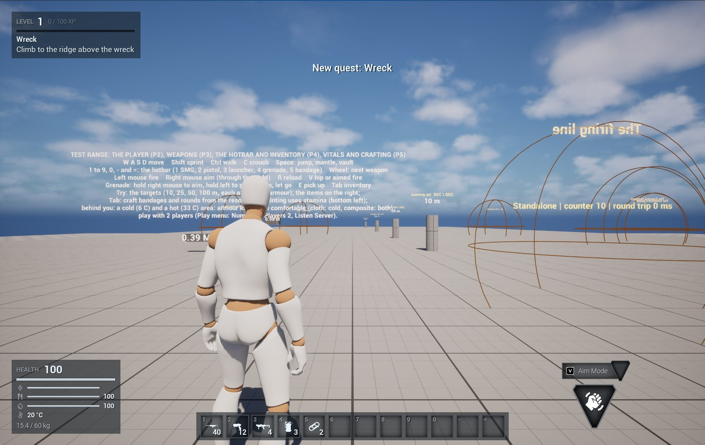
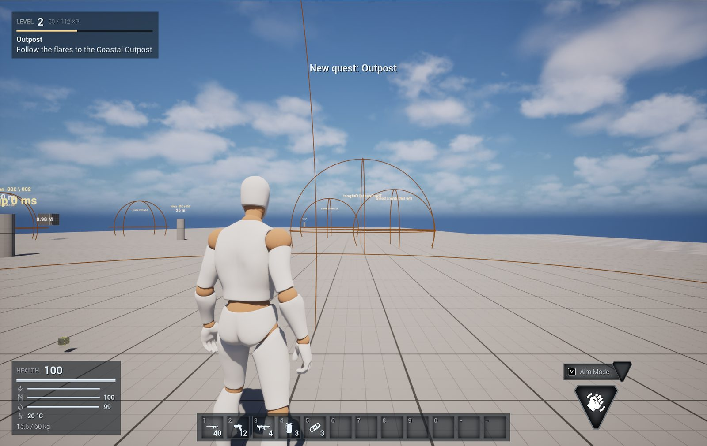
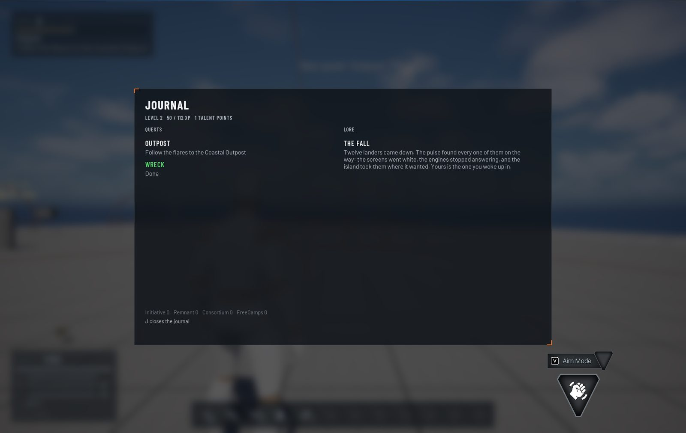
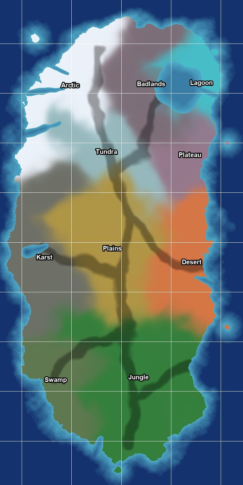

Progression and Story
The story behind the game, how we got here and what we do: quests, levels, talents, dungeons, raids and the endgame.
Doing The Story chat's space: the story behind the game, how we got here and what we do,
the factions, the quests, levels and talents, the dungeons, the raids and the endgame. Draft 1 (2026-10-19) for the
owner's review; names are placeholders. The full page is the design record's docs/story.md. Spoilers
throughout.
Next, and what the owner decides
Next The quest and XP code is written and compiles as the game target (V1 in tasks.md: levels, XP, the quest book on the player state, quest points, the HUD's tracker, the journal on J); it loads once the editor is closed and rebuilt, then the data import, the tests and quest_test.py (Wreck played through on the test range) run, then the owner play-tests Wreck and the journal. After that: the quest places on the main map with the Map chat, and the starting kit with the origins (P8).
Open question The questions this chat waits on. Each carries a recommendation; "as proposed" is an answer.
| ID | The question | Recommendation |
|---|---|---|
OQ-25 | The story (the Story chat, 2026-10-19): what the signal is, who came before, the factions, the ending | Proposal (story.md §1 to §6): the island is held together by a buried crystal machine, the Lattice, left singing the signal by its makers (the Choir) as a call for a keeper; its landing reflex crashes every ship that answers (both convoys: Meridian twelve years ago, whose survivors are the Remnant on the mesa, and the player's Lantern); four factions (the Initiative, the Remnant, the Consortium, the Free Camps) split over the keeper's choice in the endgame; five acts from the crash to the lagoon, the vertical slice's being Act I's beacon and the Remnant's questline into the Ruins of the First Signal. Adopt as the working story; names are placeholders the owner can change |
OQ-26 | baseXP and the time to level 60 (GDD 04's build note) | Proposal (story.md §8): baseXP 100; every XP reward scaled by 1.12 a content level like the curve, so a level takes about two hours at its own level and the cap about 120 hours; the main story carries a player to about level 30 (the zones' levels end there) and the endgame (raids, dungeon difficulties, the archipelago, faction wars) to 60; the talent trees of §9 (five tiers, keystones, 25 points a tree so 60 cannot fill all three) |
OQ-27 | Raids and the endgame's shape (direction §1.6) | Proposal (story.md §11 and §12): raids of eight players, 60 to 90 minutes, four bosses, a weekly lockout, three difficulties (the first under the lagoon, the second on the carrier in orbit); one dungeon a region (DGN_002 to DGN_006) and three endgame difficulties for each; the apex migration as the first world boss, whose kill unlocks a server-wide tech node for the season; the archipelago's fortresses and the Contested Ruins as the faction wars' control points, reset weekly |
Decided for this tab
| ID | Decision | Date |
|---|---|---|
D-37 | Weapons follow the progression and the story: players start with weak, low-end weapons, mods make them better, and the advanced tiers are better; each weapon's look and style comes from the story. | 2026-10-19 |
D-28 | A new player picks where to start: one or two starting locations in each region, by the difficulty they want. | 2026-10-17 |
The story in one page
How we got here. Thirty-one years ago the Exodus Initiative's deep-space arrays heard a signal from a star nobody had looked at twice: a structured pattern that repeated every nine hours and never changed. One sound in it, played aloud, everybody wrote down the same way: Tharrn. The Initiative had been founded to find humanity a second home, and the signal gave it a direction. It sent a probe, and the probe found an ocean world with one great island, two planets hanging in its sky, and the signal coming from under the island's rock.
Then it sent people. Convoy Meridian reached Tharrn twelve years ago, lost two of its four landers coming down, built a research station on the great mesa and transmitted for fourteen months. Its last message said the signal had changed. Then nothing.
Convoy Lantern is yours: a carrier and twelve landers, eight hundred operatives (scientists, soldiers, salvage crews and corporate envoys), sent to find Meridian and answer the signal properly. As the landers came down the island answered. A pulse from under the rock reached into every system, the ships' electronics failed, and the landers fell across the island. Each starting location is where one of them hit (D-28). You wake in the wreck of yours.
What we do. Survive the crash. Find the other survivors and the Initiative's rally point, the Coastal Outpost. Secure the extraction beacon, which should call a lander down from the carrier, and find out why nothing that comes down flies again. Follow Meridian's trail up the mesa and learn what they learned. Go under the island to the Ruins of the First Signal, where the signal is loudest, and face what guards it. Then decide, with every other survivor on the server, what to do with what you found: that is the endgame.
The mystery, in short. The island is held together by a buried machine: a lattice of crystal conduits through its rock, which Meridian's survivors call the Lattice. Its makers are gone. The survivors call them the Choir, because everything they built sings. The Choir left the Lattice singing the signal: an invitation and an instruction set, a call for someone to come and take over as its keeper. Any ship that answers is pulled in: the Lattice's landing reflex tries to take the ship's systems in hand, human electronics cannot take the handshake, and the ship falls. Meridian worked all this out. Its commander tried to answer the call alone, the Lattice's guardians stopped her, and the survivors went to ground on the mesa and learned to live with the hum. Initiative technology falls silent at every pulse and nothing it builds can fly through one; technology grown from the Lattice's own crystal is let through: the Alien loot tier, the Alien Synthesis talent, the nodes under your skin. Whoever answers the song in full becomes the keeper, and the keeper commands the gates that ring the island, the way to other worlds. That is what the factions come to fight over.
The main story
Five acts, from the crash to the keeper's choice. The regions are the main map's (map-design.md §3); levels follow the zones' recommended levels (Zones.csv) where a zone exists and are proposals elsewhere. The tutorial's beats (GDD 01 §1.4) are Act I's first chapter.
I. Shore
| Levels | 1 to 5 |
| Where | The crash site, the coast and the delta, the Coastal Outpost |
| Chapters | Wreck: the tutorial (movement, vitals, scavenge and craft, the first fight, the shelter). Outpost: follow the flares to the Initiative's rally point; the origin's intro quest. Beacon: find the extraction beacon in the shallows, raise it, watch the pulse take the lander that answers |
| Ends when | You have survived a 10 to 15 minute expedition, crafted the essentials and come back to the Outpost (the direction's success criterion) |
II. Signal
| Levels | 5 to 12 |
| Where | The Fungal Forest, the plains, the desert's edge |
| Chapters | Survivors: the other crash sites, each with a survivor to bring in (the NPCs of the Outpost). Cathedral: the Spore Cathedral, the first dungeon, and the first Choir door. Flats: the trading posts and the Free Camps. Hollow: the beacon's missing coil lies in Skitterjaw Hollow, the first flagged zone, with its warning overlay; the Wardens appear |
| Ends when | The Remnant's message reaches the Outpost: "Come up. We know what it is." |
III. Remnant
| Levels | 12 to 20 |
| Where | The plateau, the karst, the caverns |
| Chapters | Mesa: the climb and the Research Hub; Meridian's story. Array: the Sunken Array, for a core that sings the handshake. First Signal: the Ruins of the First Signal, the Apex Titan, the call understood. Extraction: the beacon sings back, the first lander comes down whole, and it is empty |
| Ends when | The first co-op extraction (the vertical slice's). The carrier does not answer |
IV. Weight
| Levels | 20 to 28 |
| Where | The plateau's heights, the tundra, the badlands, the arctic |
| Chapters | The Weight: Meridian's deep laboratory under the mesa and what the commander did. Migration: the apex herd's crossing (the first world event). Cold Choir: the vault in the fjords and the first gate, dark. The split: the four factions argue over the keeper's choice; the player swears to one |
| Ends when | The player holds a faction's Sworn rank and has seen a gate |
V. Keeper
| Levels | 28 to 30 and beyond |
| Where | The lagoon, the floating islands, the fortresses |
| Chapters | Skyroot: the roots that hold the islands up. Fortresses: the factions' footholds, the first territory. The Heart: the first raid, the Lattice's heart, the keeper's seat |
| Ends when | Nothing ends: the endgame (section 12) begins. A season's chapter continues the story |
What each milestone needs: the Prototype plays Act I's Wreck (P9); the vertical slice adds Beacon, the Remnant's questline (Act III's Mesa and First Signal, the Ruins of the First Signal with the Apex Titan) and the first extraction; the alpha fills Acts II and IV with the other factions; the beta builds Act V and the raid.
Pictures









Timeline
| Year | Event |
|---|---|
| -31 | The First Signal. The Initiative's arrays hear a repeating pattern from an unremarkable star. One sound in it is written down by everyone the same way: Tharrn. The world gets its name |
| -29 | The probe launched |
| -20 | The probe arrives: an ocean world, one great island, the signal's source under it. Its crystal samples are sent home ahead of it |
| -18 | Convoy Meridian launched: one carrier, four landers, 140 crew |
| -12 | Meridian arrives. The pulse takes two landers on the way down. The survivors build the research station on the mesa |
| -11 | Meridian's last transmission: "the signal has changed." Silence |
| -6 | Convoy Lantern launched: the carrier Lantern, twelve landers, 800 operatives, every one fitted with a crystal node grown from the probe's samples, so they can bear the hum that Meridian's medics described |
| 0 | Now. The pulse takes Lantern's landers. You wake at a crash site. The carrier is still in orbit and does not answer |
The island's secrets, act by act
What the player learns, in the order they learn it. Each line is a piece of the mystery with the place it is found.
| Secret | What it is | Where you learn it |
|---|---|---|
| The pulse | The island's rock pulses on a nine-hour cycle (the signal's period). A pulse knocks out Initiative electronics for a few seconds and makes the crystals bloom; anything flying falls | Act I, the crash site and the beacon |
| The hum | Near the Lattice's nodes a sound sits just under hearing. It wears on the mind: the neural stability vital. Your crystal node lets you bear it longer than Meridian's crew could | Act I, the first crystal outcrop |
| The Lattice | A buried machine of crystal conduits that holds the island together: the crystal fields are where it breaks the surface, the gravity anomalies and the floating islands are its work, the high-gravity plateau is where it strains | Act II, the desert; Act III, the Remnant |
| The Choir | The Lattice's makers, long gone. Their ruins ring the island; their doors open to tones (the resonance puzzles) and to Lattice crystal (the implants) | Act II, the Spore Cathedral |
| The Wardens | Phase Wardens are the Lattice's guardians, not animals: alloy and crystal, a shield and a step through space. They defend the nodes and the ruins | Act II, the desert |
| Meridian | What happened to the first convoy: the two landers, the station, the commander's attempt at the heart, the guardians' answer, eleven years alone | Act III, the Remnant Research Hub |
| The call | The signal is an invitation: the Lattice calls for a keeper. The landing reflex that crashes ships is its welcome | Act III, the Ruins of the First Signal |
| The handshake | Crystal that sings the Lattice's tones is let through the pulse: the Remnant's cores, an alien core in the beacon. The first lander comes down whole | Act III, the first extraction |
| The carrier | The lander that comes down is empty, flown by its automatics. Lantern answers no one. Whatever reached the landers reached the carrier too | Act III, after the extraction; the second raid |
| The gates | Choir gates stand at the island's edges, dark. The keeper commands them; a server that wakes one opens a new region (the expansions) | Act IV, the arctic; Act V |
| The keeper's choice | Silence the call so no one else falls, answer it and hold the gates, live with it, or take the land and let the rest argue: the four factions' endgame | Act IV, the factions split |
Factions
Four factions among the survivors. Each has a hub, a questline, a reputation track and vendors. The vertical slice builds the Remnant's questline first (it leads into the first dungeon); the others follow in the alpha.
The Initiative
| Who | Lantern's surviving officers and anyone who still follows orders |
| Hub | Coastal Outpost (built from the landers' hulls) |
| What they want | Order, the beacon network, extraction home, and the call silenced so no one else falls |
| What they give | Missions, armour, ammunition, rescue and escort quests, the first talents' trainers |
The Remnant
| Who | Meridian's survivors, eleven years on the mesa, half of them with crystal grown into their skin |
| Hub | Remnant Research Hub (the station on the mesa) |
| What they want | To stay, study the Lattice and live with it; they do not trust the Initiative that left them |
| What they give | Crystal technology, implants, the way into the Choir's ruins, the tech vendors |
The Consortium
| Who | The corporations that paid for both convoys, through their envoys and their security contractors |
| Hub | Contested Ruins (a fortified dig), later the archipelago fortresses |
| What they want | The Lattice's secrets and the gates: whoever holds the keeper's seat owns the way to other worlds |
| What they give | Credit, rare blueprints, vehicles, contracts in PvP zones |
The Free Camps
| Who | Scavengers, settlers and deserters who answer to nobody |
| Hub | Scavenger Flats (the trading posts where the plains meet the desert) |
| What they want | Land, trade and claims; neither home nor a corporation |
| What they give | Trade, building tiers, bounties, claims in PvP zones |
Reputation is a standing with each faction, from quests, deliveries, bounties and events: Stranger, Known, Trusted, Sworn, Legend. Each rank opens vendor rows and one faction blueprint; Legend gives the faction's signature item. In the endgame a player swears to one faction for the faction wars (section 12); the other three stop at Trusted.
Origins
The four origins of character creation (GDD 01 §1.3). Each sets a starting talent point, a unique starter item and a three-step intro quest that runs alongside the tutorial (GDD 01 §1.4) at any crash site.
Scientist
| Talent point | Tech |
| Starter item | Field scanner: scanning a creature shows its weak point and resistances; scanning an outcrop reads its tone |
| Intro quest, three steps | Readings: pull the lander's black box; scan the first crystal outcrop and hear the hum; send both readings to the Outpost |
Soldier
| Talent point | Combat |
| Starter item | Composite vest (30 % armour) |
| Intro quest, three steps | Muster: clear the pack from the crash site; recover the squad's weapons cache from the second wreck; raise the perimeter turret at the first shelter |
Scavenger
| Talent point | Survival |
| Starter item | Salvage multitool: +20 % from wreckage and nodes, and strips a wreck faster |
| Intro quest, three steps | Strip the Wreck: cut alloy and fibre from the lander; craft rounds at the first bench; bury a cache and mark it on the map |
Corporate Envoy
| Talent point | One point in any tree |
| Starter item | Sealed directive: a Consortium credit chit (vendor prices -10 %) and orders the envoy has not read yet |
| Intro quest, three steps | The Directive: open the directive (the Consortium's real orders: secure Choir technology before the Initiative does); recover the convoy's manifest; hand it to the Outpost or keep it, the first reputation choice |
Quests
The direction's five quest types, how each works and what the first ones are. Quests are data (stages, objectives, rewards) run by a server-side quest subsystem (GDD 04 build note); the journal shows objectives, stages, lore entries and map markers (GDD 10).
| Type | How it works | Examples |
|---|---|---|
| Main | The story's chapters (section 6), one at a time, with cinematics at the act breaks. Rewards: large XP, a blueprint at each act's end, the next region's map | Beacon, Mesa, First Signal |
| Side | Found in the world: survivors, wrecks, terminals, a creature's nest. Short, self-contained, repeatable where it makes sense | Twelve Landers (find every crash site), The Black Box (a lander's log, a lore entry), Nest Clearing |
| Faction | From the faction's board at its hub; raise reputation; each rank unlocks the next chapter of the faction's own story | Initiative: Flare Line (plant beacons between the Outpost and the forest). Remnant: Tones (record a Choir door's tones). Consortium: Dig Site Seven. Free Camps: Bounty: the Hollow |
| Timed | Open for a window and then close: the pulse (every nine in-game hours, 22 real minutes with OQ-11's day), a storm, a migration, a hotspot rotation. Rewards above the zone's loot tier | Bloom (harvest crystals during a pulse, 10 minutes), Tidal Storm (reach the beacon before the storm), Hotspot (hold the rotating PvP node) |
| Dungeon | Given at a dungeon's door, or by a faction: clear the dungeon, kill its boss, bring back a specific item; the weekly dungeon quest rotates the dungeon and its modifiers | The Cathedral's Heart, Warden Prime, the weekly |
Cadence. Daily missions: three from each hub's board (a kill, a gather, a delivery), refreshed at the server's midnight. Weekly: the world event (the apex migration or a hotspot rotation), the weekly dungeon, the raid lockout. Seasonal: a new story chapter, a world event, a gate.
Data. Data/Quests.csv: quest_id,name,type,faction,level,giver,prerequisites,stages,rewards; a stage is objective_type:target:count (kill, gather, reach, interact, craft, deliver, survive_minutes, extract), stages separated by semicolons; rewards xp:N;item:ID:count;rep:FACTION:N;blueprint:ID. Lore entries in Data/Lore.csv (lore_id,title,text,where), shown in the journal when found. The subsystem keeps each player's quest states on the server and replicates only that player's; a group shares kill and reach objectives.
Levels and XP
Designed Sixty levels and the direction's curve; Open question baseXP, the XP sources and
the level bands are proposals (OQ-26).
Level cap 60, one talent point a level, the direction's curve: XP(level) = baseXP × 1.12^(level − 1) is what the next level costs. Proposal: baseXP = 100. The curve is steep: the last ten levels hold two thirds of all the XP to 60, so rewards scale by the same 1.12 a level (below) and every level takes about the same time at content of its own level.
| Level | XP to the next level | All XP so far |
|---|---|---|
| 1 | 100 | 0 |
| 10 | 277 | 1,476 |
| 20 | 861 | 6,343 |
| 30 | 2,675 | 21,456 |
| 40 | 8,308 | 68,399 |
| 50 | 25,804 | 214,197 |
| 59 | 71,556 | 595,464 |
| 60 | cap | 667,020 |
Sources of XP (proposal). Every reward below is at level 1 and is multiplied by 1.12^(content level − 1), the creature's, quest's or zone's level, so a level 20 kill is worth 8.6 times a level 1 kill and a level 40 kill 83 times. With a level's content giving about 50 % of the level's cost an hour, a level takes about two hours, and level 60 about 120 hours of play at level; a group shares kill XP in full.
| Source | XP at level 1 |
|---|---|
| Kill: small, medium, large creature | 5, 12, 30 |
| Kill: boss | 400 |
| Weak-point kill | +25 % |
| Side quest, faction quest, daily | 40, 60, 60 |
| Main chapter | 150 |
| Timed quest | 80 |
| First visit to a zone, a landmark found | 25 |
| First craft of a recipe | 10 |
| Dungeon cleared (its level) | 300 |
| Raid boss | 800 |
Where the levels happen (proposal). The zones' recommended levels end at 30 while the cap is 60: the main story carries a player to about 30, and the endgame (raids, dungeons at higher difficulties, the archipelago, faction wars) carries them to 60. The tundra, badlands and arctic have no zones yet (the Map chat's layout, 2026-10-19); their levels are proposals until zones exist.
| Region | Levels | Act | Zones |
|---|---|---|---|
| Coast and delta | 1 to 5 | I | Coastal Outpost 1, Shoreline Flats 1 |
| Fungal Forest | 5 to 10 | II | Fungal Fringe 5, Lumivine Grove 10 |
| Plains and the desert's edge | 6 to 12 | II | Scavenger Flats 6, Skitterjaw Hollow 8 (PvP) |
| Crystalline Desert | 12 to 18 | II and III | Contested Ruins 16 (PvP), Crystal Expanse 18 (PvP) |
| Plateau | 12 to 22 | III and IV | Remnant Research Hub 12, High Gravity Plateau 22 |
| Karst and caverns | 15 to 20 | III | Subterranean Mouth 15, Echo Caverns 20 (PvP) |
| Tundra and badlands | 20 to 26 | IV | none yet |
| Arctic | 24 to 28 | IV | none yet |
| The west coast | 25 | IV | Apex Migration Path 25 |
| Lagoon and floating islands | 28 to 30, then the endgame | V | Floating Archipelago A 30 (PvP), Amber Buffer North 10 |
Talents
Designed Three trees, one point a level (GDD 04); the direction's nine example talents are marked. Open question The rest of the trees are proposals.
Three trees, Combat, Survival and Tech, 60 points in all. Each tree has five tiers; a tier opens at 0, 4, 8, 12 and 16 points spent in that tree, and the fifth tier is a choice of one keystone of two. A tree holds 25 points of talents, so 60 points fill two trees and a third's lower tiers, or spread across all three: no character has everything. Respecialising costs credit at a hub. The direction's nine example talents are kept (marked direction); the rest are proposals. Every effect is a gameplay effect or an ability grant on the server (GDD 04 build note).
Combat
| Tier | Talent | Effect | Ranks |
|---|---|---|---|
| 1 | Precision Training (direction) | Recoil -10 % a rank | 3 |
| 1 | Quick Reload (direction) | Reload 15 % faster | 1 |
| 1 | Steady Hands | Aim sway while aiming -20 % | 1 |
| 1 | Hard Target | Maximum health +10 % a rank | 2 |
| 2 | Weak Point Study | Weak-point multiplier +0.25 | 1 |
| 2 | Breaker Rounds | Stagger dealt +25 % | 1 |
| 2 | Suppressive Fire (direction) | Enemies in your fire's cone for 1 s are suppressed: slower, less accurate, for 3 s | 1 |
| 2 | Second Wind | Bandages apply 30 % faster | 1 |
| 3 | Overwatch | After aiming for 2 s, the first shot deals +20 % | 1 |
| 3 | Demolitions | Blast radius +15 %; carry two more grenades | 1 |
| 3 | Momentum | A kill gives 10 % faster reloads and sprint for 5 s | 1 |
| 3 | Plated | Worn armour stops 5 % more a rank | 2 |
| 4 | Executioner | Staggered enemies take +30 % | 1 |
| 4 | Deep Magazines | Magazines hold 20 % more | 1 |
| 4 | Hunter's Mark | Mark a target: your group sees it through walls for 8 s; 20 s cooldown | 1 |
| 4 | Bulwark | Standing still while aiming: 10 % less damage taken | 1 |
| 5 | Apex Hunter (keystone) | Bosses and world bosses take +15 %; weak-point hits bleed for 3 s | 1 |
| 5 | Vanguard (keystone) | Your group within 15 m deals +10 %; you resist stagger 20 % more | 1 |
Survival
| Tier | Talent | Effect | Ranks |
|---|---|---|---|
| 1 | Efficient Forager (direction) | +20 % resource yield | 1 |
| 1 | Iron Stomach | Hunger drains 15 % slower a rank | 2 |
| 1 | Advanced Filtration (direction) | Hydration drains 15 % slower a rank | 2 |
| 1 | Field Medic (direction) | Bandages heal +50 % | 1 |
| 2 | Acclimatised | The comfortable temperature range widens by 4 °C each way | 1 |
| 2 | Long Stride | Sprinting drains stamina 15 % slower | 1 |
| 2 | Packrat | Carry 10 kg more a rank | 2 |
| 2 | Trailcraft | Resource nodes within 60 m show on the compass | 1 |
| 3 | Deep Breath | Oxygen in the caverns lasts 50 % longer; radiation builds 25 % slower | 1 |
| 3 | Base Instinct | Building pieces cost 15 % less and decay 25 % slower | 1 |
| 3 | Quiet Mind | Neural stability drains 25 % slower and recovers at a bench | 1 |
| 3 | Butcher | One more piece of loot from every creature | 1 |
| 4 | Camp | Craft a camp: rest in it restores vitals and sets your respawn point | 1 |
| 4 | Grit | Below 30 % health: 20 % less damage taken | 1 |
| 4 | Salvager | Dismantle items for half their inputs | 1 |
| 4 | Tidewatcher | Storm and pulse warnings two minutes early; timed quests give +20 % loot | 1 |
| 5 | Survivor (keystone) | One chosen inventory slot survives death, even full loot in a PvP zone | 1 |
| 5 | Homesteader (keystone) | Claim upkeep -30 %; your turrets deal +25 % | 1 |
Tech
| Tier | Talent | Effect | Ranks |
|---|---|---|---|
| 1 | Scanner Calibration | A scan shows weak points and resistances (every origin; the Scientist's scanner reads tones too) | 1 |
| 1 | Power Optimization (direction) | Generators use 20 % less fuel | 1 |
| 1 | Fast Hands | Crafting 20 % faster a rank | 2 |
| 1 | Tinkerer | Attachments cost 25 % less to craft | 1 |
| 2 | Drone Control (direction) | Deploy a scout drone: it marks creatures and nodes for 30 s | 1 |
| 2 | Overclock | A generator gives +25 % for 60 s; 5 minute cooldown | 1 |
| 2 | Cell Economy | Energy weapons use 15 % less charge | 1 |
| 2 | Reverse Engineering | Dismantling a Rare or better item gives a blueprint fragment | 1 |
| 3 | Combat Drone | The drone shoots (a pistol's damage) | 1 |
| 3 | Shield Node | A deployable bubble that stops projectiles for 10 s; 45 s cooldown | 1 |
| 3 | Alien Synthesis (direction) | Craft alien cores from biotech cores and energy crystals | 1 |
| 3 | Signal Lock | The hum's hallucinations point at real hidden caches | 1 |
| 4 | Gate Reader | Gate timers on the map; gate cooldowns -25 % | 1 |
| 4 | Turret Doctrine | Turrets +30 % range | 1 |
| 4 | Resonance | Energy damage +15 %; Wardens' shields break 50 % faster | 1 |
| 4 | Hull Mastery | Vehicles use 25 % less fuel and repair 50 % faster | 1 |
| 5 | Keeper's Ear (keystone) | Alien-tier crafts cost 25 % less; the hum no longer drains neural stability | 1 |
| 5 | Warden Protocol (keystone) | Your drone revives a downed ally once a minute | 1 |
Loot, blueprints, mastery and reputation
| Tier | Where it comes from | Needs a blueprint? |
|---|---|---|
| Common | The coast, the Flats; any creature | No |
| Uncommon | The forest, the buffer belts; crafted at a bench | No |
| Rare | The Hollow, the caverns' mouth, the Research Hub, the migration path; dungeon chests; faction rank Trusted | Yes, to craft |
| Advanced | The Crystal Expanse, the Contested Ruins, the plateau, the Echo Caverns; dungeon bosses; faction rank Sworn | Yes |
| Alien | The archipelago; raid bosses; world bosses; Legend; Alien Synthesis | Yes, and an alien core |
Blueprints are learned, not carried: once read, the recipe is yours. They come from main chapters (one at each act's end), dungeon and raid bosses (unique to each), faction ranks, world events and blueprint fragments (five make a random blueprint of the tier). A server's global boss kills unlock server-wide tech nodes (section 12): blueprints everyone on the server can read for the season.
Weapon mastery is per family (SMG, rifle, shotgun, pistol, heavy, energy), ten ranks each from use: each rank +1 % handling (reload and aim time), and ranks 3, 6 and 10 give an attachment blueprint for that family (a barrel, an optic, a core: deliverable 7's attachments).
Reputation ranks (section 4): Stranger 0, Known 500, Trusted 1,500, Sworn 4,000, Legend 10,000 standing. A faction quest gives 50 to 150 standing, a daily 50, a bounty 100, a world event 250.
Dungeons
Dungeons are instanced, assembled from room templates with a seed and modifiers (GDD 09; deliverable 6 has the rooms, puzzles, traps and the generator's rules). In the story every dungeon is a Choir place or a Meridian place. The draft dungeon DGN_001 is the owner's; the rest are proposals, one a region, their levels at their region's.
The Spore Cathedral
| ID | DGN_002 |
| Where | Fungal Forest, under the Lumivine Grove |
| Level | 8 |
| Entry | Any group; the first dungeon, three rooms |
| Boss | The Lumivine Mother (a Colossus elder) |
| In the story | The first Choir door, opened by the tones heard in the grove (the resonance puzzle). Act II |
Ruins of the First Signal
| ID | DGN_001 |
| Where | The caverns, from the Subterranean Mouth |
| Level | 12 (the zone recommends 15: to confirm) |
| Entry | An activation key or a group of three |
| Boss | Apex Titan (CR006) |
| In the story | Where the signal is loudest and Meridian's commander answered it. The Titan nests in the Choir's hall. Act III's climax |
The Sunken Array
| ID | DGN_003 |
| Where | Crystalline Desert, under the Crystal Expanse |
| Level | 18 |
| Entry | A group; a Rare key from a Warden |
| Boss | Warden Prime (a Phase Warden with a full shield) |
| In the story | A Choir antenna half-buried in the dunes: the core that sings the handshake. Act III |
The Weight
| ID | DGN_004 |
| Where | The plateau, Meridian's deep laboratory under the mesa |
| Level | 22 |
| Entry | Remnant rank Trusted |
| Boss | The Burden (a plateau titan grown in the lab) |
| In the story | What the commander did to answer the call, and what the Lattice did back. Act IV |
The Cold Choir
| ID | DGN_005 |
| Where | The arctic, a vault at the head of a fjord |
| Level | 26 |
| Entry | A group; a Consortium or Remnant key |
| Boss | The Frost Warden and an Echo Swarm queen |
| In the story | The first gate, dark, and the Choir's own record of leaving. Act IV |
The Skyroot
| ID | DGN_006 |
| Where | The lagoon, inside the roots that hold the islands up |
| Level | 30 |
| Entry | A group of four; flagged (it opens from Floating Archipelago A) |
| Boss | The Keeper's Shadow (an echo of the last keeper) |
| In the story | The way to the keeper's seat. Act V, the raid's door |
Difficulties. After Act V, every dungeon runs at three difficulties for the endgame: its own level, +10 and +20 levels, with two then three modifiers rolled, and loot a tier higher at each step. The weekly dungeon quest picks one.
How a dungeon is built
Designed Instanced and assembled from room templates, with a seed and modifiers that change each run (GDD 09).
| Room | What happens |
|---|---|
| Antechamber | Entry, a respawn beacon, the dungeon's lore panel, a chest after the boss (deliverable 6's sixth room) |
| Puzzle room | Needs a crafted item or a trigger in the room: power routing, resonance or gravity alignment |
| Combat arena | Waves of enemies, with cover and height; a mini-boss variant has one elite instead |
| Traversal chamber | Platforming and shifting gravity |
| Trap corridor | Timed hazards (pulse sweeps) and detection (sentry scans) |
| Boss arena | A boss in several phases, using the room against you |
Modifiers: gravity shift (low or high), fog of war, enemy variation, a time limit. Bosses change at 75, 50 and 25 % health, adding a shield, minions or a hazard, and drop unique blueprints and rare loot.
DGN_001
Ruins of the First Signal
The owner's draft dungeon, from the game's Data/Dungeons/DGN_001.json.
| Where | Subterranean Caverns |
| Recommended level | 12 |
| Entry | Activation Key or group of 3 |
| Rooms | puzzle room → combat arena → traversal chamber → trap corridor → boss arena |
| Modifiers | gravity shift, fog of war, enemy variation |
| Boss | Apex Titan (CR006) |
| Loot | boss_blueprint, alien_core, rare_alloy |
Open question The Apex Titan is the direction's big multi-phase boss, here at level 12, and the caverns zone recommends level 15.
Raids and the endgame
Raids are instanced, for eight players (two dungeon groups), 60 to 90 minutes, three bosses and a final one, modifiers rolled weekly, a lockout of one clear a week for each character, Alien loot and unique blueprints. Wipes send the group to the last cleared boss. The first raid is the beta's; the second a season's.
The Heart of the Lattice
| Where | Under the lagoon, through the Skyroot |
| Level | 30, then 40 and 50 |
| Bosses | The Choirmaster's Guard (three Wardens as one), the Tide (an Echo Swarm filling the hall), the Apex Matriarch, the Keeper's Seat (the Lattice itself: a puzzle fight on the gravity phases) |
| In the story | The keeper's seat. The first server to clear it sees the first gate open |
Lantern
| Where | The carrier in orbit, reached through the first gate |
| Level | 40, then 50 and 60 |
| Bosses | Lander bay automatics, the bridge's Warden, the hum made flesh in the cold-sleep hall, the captain |
| In the story | What the Lattice did to the carrier, and the convoy's command still up there |
World bosses. The apex migration (Apex Migration Path, a world event once a week): the herd crosses the west coast under the Apex Matriarch; killing her is a global boss kill, and the server unlocks a tech node (a blueprint everyone can read) for the season. Later events: a Warden host at a pulse, a tidal storm's leviathan.
Faction wars and territory. The archipelago's fortresses and the Contested Ruins are control points, captured by flagged players of a sworn faction (PvP rules, GDD 05). The holding faction's members pay less at its vendors and get a share of the zone's rare nodes; control resets weekly, and the season's winner names the next chapter's villain.
Seasons and gates. A season is three months: a story chapter (the keeper's choice carried one step further), a world event, a dungeon at a new difficulty, cosmetic rewards. An expansion opens a gate to a new region, a map extension reached by the gate or by a long-range vehicle (GDD 01 §1.6), and the story goes with it.
Tiers: how each age looks and feels
The owner, 2026-10-19: the story's progression dictates to the other chats, weapons and building among them, how their work looks and feels at each tier, and they model and build to it (the Weapons and Tools chat's D-37: "The look and style of the weapon is based on the story"). The rule: every tier is a maker in the story, and a maker has one material language, one palette, one condition and one sound, whatever the chat: a gun, a wall, a hub, a creature's den or a screen made by the same hands looks like the same hands made it. The five loot tiers of GDD 04 are the five makers below; the Free Camps' scavenged look is a branch of the second age, not a tier of its own.
The Wreck. Lantern's landers, what the crash left
| Act, levels, loot tier | Act I, levels 1 to 5, Common |
| Weapons (D-32) | Wreck tier |
| Building (D-33) | 1 Wooden Fiber (timber and fibre lashed to lander plating) |
| Materials and colours | Initiative issue scorched: off-white polymer burned to grey and char, bare alloy where the paint went, tape, wire, hide and woven fibre; the orange stripe left as a trace |
| Condition, motion and sound | Improvised and asymmetric, nothing fits, heavy wear; it rattles and creaks; screens flicker |
| At a pulse | Falls silent for the pulse's seconds |
The Outpost. The Initiative's fabricator printing the convoy's pattern clean
| Act, levels, loot tier | Act II, levels 5 to 12, Uncommon |
| Weapons (D-32) | Issue tier |
| Building (D-33) | 3 Enhanced Alloy (the bundle's colony prefab) |
| Materials and colours | The clean print: matte off-white polymer, dark alloy receivers and frames, the Exodus orange stripe, stencilled serials, square panel lines |
| Condition, motion and sound | Factory-new and squared: the one neat age; precise clicks and servo whines; the HUD at its cleanest |
| At a pulse | Falls silent |
The Flats (a branch of the second age). The Free Camps' scavenged, traded work
| Act, levels, loot tier | Act II, levels 6 to 12, Uncommon to Rare |
| Weapons (D-32) | SG-01 and the scavenger pieces: pipe, plate and tape |
| Building (D-33) | 2 Salvaged Mineral (cast stone, bolted plates, rust) |
| Materials and colours | Rust and cast stone, mismatched plates, rope, hazard paint by hand, tarps; whatever the wrecks and the rock gave |
| Condition, motion and sound | Heavy, loud and rough, patched over patches; clanks and scrapes |
| At a pulse | Falls silent |
The Contract. The Consortium's security contractors: corporate, machined, cold
| Act, levels, loot tier | Acts III and IV, levels 12 to 22, Rare |
| Weapons (D-32) | Contract tier |
| Building (D-33) | A dressing on Enhanced Alloy for the Consortium's places (the Contested Ruins dig, the fortresses): hazard trim, serial plates |
| Materials and colours | Gunmetal and matte black, machined edges, yellow-and-black hazard trim, serial plates, no decoration |
| Condition, motion and sound | Precise and heavy, everything bolted square; thuds and hydraulic hisses; lights steady and white |
| At a pulse | Falls silent |
The Remnant. Meridian's survivors, twelve years adapting Initiative gear with Lattice crystal
| Act, levels, loot tier | Acts III and IV, levels 12 to 28, Advanced |
| Weapons (D-32) | Remnant tier |
| Building (D-33) | A dressing on Enhanced Alloy for the Research Hub: station brass, conduits, crystal grafts; later a player upgrade |
| Materials and colours | A weathered Issue base with station brass and copper conduits bolted on, crystal capacitors and panels in the Lattice's light; bone and leather where the polymer gave out |
| Condition, motion and sound | Lived-in and hand-made, every piece different; it hums and ticks; the crystal flickers at a pulse but holds |
| At a pulse | Works through it |
The Choir. Grown from the Lattice's own crystal
| Act, levels, loot tier | Act V and the endgame, levels 28 to 60, Alien |
| Weapons (D-32) | Choir tier |
| Building (D-33) | 4 Biotech (grown panels with glowing seams) |
| Materials and colours | Dark crystal and alloy with no visible mechanism; seams of the Lattice's light; nothing cut, everything grown |
| Condition, motion and sound | Seamless, slow, certain; it sings the Choir's tones, the light breathes |
| At a pulse | Works through it, and brightens |
One light for the Lattice. Everything crystal (the fields, the Choir's ruins and doors, Remnant grafts, Choir weapons and Biotech walls, the nodes under the players' skin) glows the same colour, the interface's Neural token, so a glow means the Lattice anywhere in the game. Initiative orange means the convoy and the Initiative; the Consortium gets hazard yellow; the Free Camps hand-painted white marks.
The pulse touches every tier. Initiative, Flats and Contract technology falls silent for the pulse's few seconds (sights, lights, turrets, generators, the HUD flickers); Remnant and Choir technology does not. It is one rule for weapons, building, the world and the interface, so the higher tiers matter beyond numbers.
What each chat takes from this:
- Weapons and Tools: the five tiers above are the weapon tiers (weapons.md §5), the Flats branch is the shotgun's and the scavenger tools' look; the starting kit is the Wreck tier (OQ-28, agreed: the origin's weapon with one magazine, the sidearm, a bandage, the tools; the launcher comes with the Soldier's cache and the Flats' trade).
- Building: the four tiers of D-33 are the Wreck, the Flats, the Outpost and the Choir; the Contract and the Remnant are dressings on Enhanced Alloy for their hubs now and player upgrades later; a base's age should read from across a field.
- The map: each region's built places follow their maker: the Outpost and the first camps are the Wreck becoming the Outpost; the Flats are the Flats; the Contested Ruins dig and the fortresses are the Contract; the Research Hub is the Remnant; the Choir's ruins, doors and gates and the lagoon's islands are the Choir; the crystal fields show the Lattice's light more the further north.
- The interface: the loot tiers' colours are the makers'; the HUD flickers at a pulse until the Remnant's implant steadies it (the Keeper's Ear keystone); the loading screen's tips and the journal use the makers' names.
- Creatures (P7): the Wardens are the Choir's make; the apex fauna are the island's; nothing on the island wears the Initiative's orange but the survivors.
For the owner
- OQ-25: The story bible's big choices: the Lattice and the Choir, the two convoys, the four factions and the keeper's choice (sections 1 to 6). Adopt as the working story, with any names and twists the owner wants changed.
- OQ-26: baseXP and the time to level 60: baseXP 100, rewards scaled by 1.12 a level, about 120 hours of play at level to the cap; the main story to about level 30 and the endgame to 60 (section 8).
- OQ-27: Raids: eight players, 60 to 90 minutes, four bosses, a weekly lockout, three difficulties (section 12); the first raid under the lagoon, the second on the carrier.
Steps
| Step | What | State |
|---|---|---|
| Q1 | The story bible and the progression design, draft 1 (this page); the wiki's Progression and Story tab | Doing draft 1, 2026-10-19, for the owner's review (OQ-25 to OQ-27) |
| Q2 | Progression in the build: XP and level on the player state (C++, the server owns them; saving to a profile later), XP from kills, quests, discovery and first crafts, the level and XP on the HUD; Data/Talents.csv and the talent screen come with the trees | In the build 2026-10-20: built and checked (tasks.md, V1); the owner's play-test next |
| Q3 | Quests in the build: Data/Quests.csv, Data/QuestStages.csv and Data/Lore.csv, the server's quest book on the player state, quest points in the world, the HUD's tracker and the journal (J, from the interface's parts); Act I's three chapters and the Remnant's questline in the data, Wreck playable on the test range | In the build 2026-10-20: built and checked; the owner's play-test next |
| Q4 | The origins' intro quests in the tutorial (with P9's play-through); the starting kit at the Wreck tier (OQ-28) | Designed |
| Q5 | The Ruins of the First Signal built from deliverable 6, with the Apex Titan (P7's creatures) | Designed the vertical slice's dungeon |
| Q6 | Faction boards, reputation and vendors; the Remnant Research Hub as the first faction hub | Designed the alpha |
| Q7 | Lore in the world: the journal's entries, the landers' black boxes, the Choir's panels, the Remnant's logs | Designed the alpha |
| Q8 | World events, the Heart of the Lattice raid, faction wars and territory | Designed the beta |